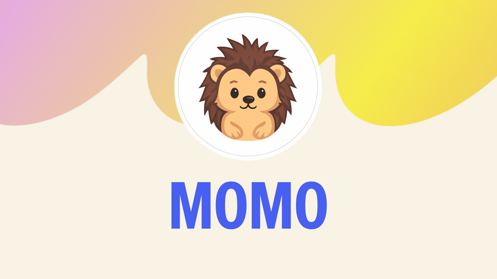
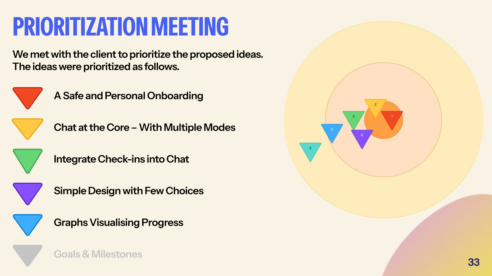
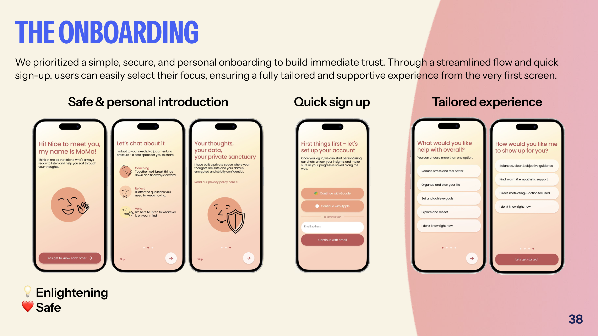
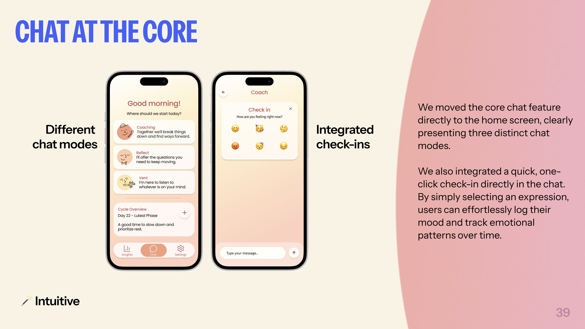
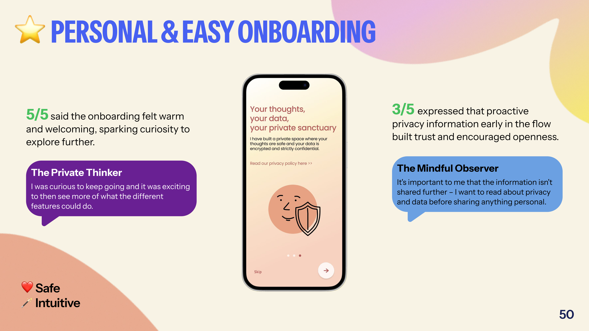

MOMO
Detta projekt genomfördes inom ramen för en UX-designutbildning i samarbete med en startup och fokuserade på att undersöka hur en AI-coach för vardagsstöd kan göras mer begriplig, trygg och användbar. Tyngdpunkten låg på research, syntes, konceptutveckling och testning.

Överblick & kontext
Projektets mål var att förstå vilka behov målgruppen faktiskt hade kring en AI-coach, vilka funktioner som skapade mest värde och hur upplevelsen kunde göras enklare, tryggare och mer intuitiv.
Min roll & mitt fokus
Jag var delaktig i hela processen, med störst tyngd i UX-research, analys/syntes, workshoparbete, prioritering och testning. Min minsta del låg i det konkreta UI-arbetet, även om jag också bidrog i diskussioner kring struktur och flöden.
Mitt ansvar låg särskilt i att:
- planera och genomföra intervjuer och observationer
- facilitera möten med uppdragsgivaren
- facilitera gruppworkshops och idégenerering
- analysera och syntetisera researchmaterialet
- delta i planering, genomförande och analys av tester
- driva prioriteringsarbete utifrån värde och genomförbarhet
Mitt bidrag bestod framför allt i att skapa riktning: att hjälpa teamet att gå från många observationer och idéer till tydliga insikter, realistiska prioriteringar och mer fokuserade koncept.
Utgångspunkt & problemområde
När projektet började fanns redan en befintlig webapp/prototyp. Uppdraget var därför inte att börja från noll, utan att förstå hur väl den existerande lösningen faktiskt mötte målgruppens behov och var den skapade friktion.
Ganska tidigt blev det tydligt att utmaningen inte bara handlade om gränssnitt eller enstaka funktioner. Det handlade också om positionering, förtroende och tydlighet: vad appen egentligen var, hur den skulle användas och varför någon skulle vilja öppna sig i den.
Research-upplägg
Vi genomförde intervjuer med personer i målgruppen som inte tidigare hade använt appen. I samma session fick de också testa den befintliga lösningen, vilket gjorde att vi kunde kombinera uttalade behov med observationer av faktisk användning.
Det arbetssättet blev särskilt värdefullt eftersom vi då kunde jämföra två saker samtidigt: vad användarna hoppades få ut av en AI-coach och hur den nuvarande upplevelsen faktiskt fungerade i praktiken.
Researchen användes för att:
- identifiera behov och förväntningar kring en AI-coach
- utvärdera hur väl den befintliga lösningen mötte dessa behov
- hitta förbättringsområden för flöden, trygghet och tydlighet
Centrala insikter
Det blev snabbt tydligt att den befintliga lösningen bar på ett tydlighetsproblem. Flera deltagare hade svårt att förstå om MoMo var en journal, en coach eller något däremellan, och många var osäkra på hur man skulle börja använda appen.
Integritet och datahantering visade sig också vara avgörande. När det var oklart vem som kunde se innehållet och hur personlig information användes ökade tvekan att dela sådant som faktiskt gör en coachande tjänst värdefull.
En tredje viktig insikt var att för mycket krav riskerade att förvandla stöd till belastning. När interaktionen upplevdes som ytterligare ett projekt i vardagen väcktes stress och skuld snarare än motivation.
Samtidigt framträdde något mycket tydligt: chatten var tjänstens kärna. Det var där användarna upplevde mest värde, mest personlighet och störst potential till verkligt stöd.
Beteendetyper som syntesverktyg
För att göra materialet användbart i fortsatt konceptarbete arbetade vi fram tre beteendetyper: Coper, Organizer och Optimizer.
- Coper söker framför allt trygghet, avlastning och stöd med låg tröskel.
- Organizer söker struktur, överblick och hjälp att skapa ordning i vardagen.
- Optimizer söker progression, målfokus och tydlig återkoppling kring utveckling.
Det viktigaste var inte bara att typerna blev tydliga, utan att Coper framstod som den mest centrala. Den insikten gav arbetet en tydligare riktning: mindre prestationslogik, mer trygghet, låg tröskel och stöd som känns mänskligt och genomförbart.
För mig blev detta också en tydlig påminnelse om hur starkt beteendetyper kan fungera som analysverktyg. I det här projektet blev de mer användbara än en traditionell persona, eftersom de tydligare visade vilket slags stöd användaren faktiskt behövde.
Från insikt till koncept
Researchen påverkade inte bara vårt eget arbete, utan också dialogen med uppdragsgivaren. Efter att vi presenterat våra insikter blev det tydligt att riktningen behövde flyttas mot en enklare, tryggare och mer stödjande upplevelse, med chatten som kärna.
Vi använde insikterna i strukturerade workshops där idéer först breddades och sedan värderades. Här hade jag en tydlig faciliterande roll, både i workshoparna och i prioriteringsarbetet, med fokus på att hålla ihop kopplingen mellan användarbehov, genomförbarhet och värde.
I dialogen med uppdragsgivaren skärptes också riktningen mot kvinnor som primär målgrupp. Det låg delvis i linje med vår syntes kring Coper, och senare blev också menscykelintegrationen en tydligare del av lösningen.

Lösning (översikt)
Resultatet blev en prototyp där chatten flyttades till centrum, onboardingen förenklades och antalet val minskades. Lösningen byggde på att göra upplevelsen varm, trygg och lätt att förstå, snarare än att överbelasta användaren med funktioner.
Vi integrerade också check-ins direkt i chatten och skapade en insights-del som visualiserade mönster över tid på ett lugnt och icke-dömande sätt.

Prototypens höjdpunkter
En viktig del av lösningen var att dela upp chatten i olika lägen med olika typer av stöd.
- Coaching var det mest förändringsinriktade läget, där användaren kunde få frågor, vägledning och hjälp att hitta nästa steg.
- Reflect var ett lugnare läge för reflektion, där användaren kunde utforska olika livsområden genom frågor.
- Vent var ett mer empatiskt och lyssnande läge, särskilt relevant för Coper, där fokus låg på att få uttrycka sig och bli mött utan krav på direkt förändring.
Efter testningen blev det också tydligt att insights-delen behövde bli mer handlingsbar. Därför började vi skissa på ett fjärde spår, preliminärt kallat Feedback, där insikter kan översättas till konkret stöd, reflektion och nästa steg.

Användartestning
Vi genomförde först ett guerrilla-test för att utvärdera första intryck och koncepttydlighet. Därefter genomförde vi usability-tester med fokus på onboarding, chattlägen, check-ins, förenklad design och visualisering av insikter.
Jag var delaktig i hela testkedjan: planering, genomförande, observation, analys och sammanställning av insikter. I testerna tog jag både rollen som testledare och observatör.
Lärdomar från test
Testningen bekräftade att riktningen var stark. Deltagarna förstod snabbt appen som ett AI-baserat stödsystem med chatten som kärna, och den nya versionen upplevdes som varmare, tryggare och enklare än tidigare.
Samtidigt framträdde två särskilt viktiga saker. Den ena var att menscykelintegrationen väckte större intresse än väntat och upplevdes som en tydlig differentierare. Den andra var att insights-funktionen sågs som mycket värdefull, men att användarna ville att insikter skulle leda vidare till något mer praktiskt och hjälpsamt.
För mig blev det ett tydligt exempel på att en bra UX-lösning inte bara behöver vara begriplig, utan också hjälpa användaren vidare när ett värde väl har identifierats.

Vad projektet lärde mig om UX research i praktiken
Projektet fördjupade min förståelse för hur viktig syntesen är i UX research. Det räcker inte att samla in bra material; värdet uppstår först när insikterna görs användbara och kan skapa riktning i ett team.
Det blev också tydligt hur kraftfulla beteendetyper kan vara som analysverktyg. I det här projektet blev de mer användbara än en traditionell persona, eftersom de gjorde det tydligare vilket slags stöd användaren faktiskt behövde och därmed också vad lösningen borde prioritera.
En annan lärdom var värdet av att inte gå för snabbt till lösning. När vi tog oss tid att låta materialet landa och arbeta ordentligt med syntesen blev riktningen både tydligare och bättre förankrad.
Reflektion & nästa steg
Om arbetet skulle drivas vidare skulle nästa steg vara att göra insights-delen tydligare och mer handlingsbar, utveckla feedback-spåret vidare och fortsätta finjustera samspelet mellan stöd, integritet och låg tröskel.
Projektet blev också ett konkret exempel på hur research kan påverka mer än bara en studentprototyp. Redan innan arbetet var avslutat hade uppdragsgivaren börjat röra sin egen lösning i samma riktning som våra insikter pekade mot: tydligare onboarding, chatten i centrum, integrerade check-ins och en förenklad upplevelse.
Utvalda projektartefakter
Följande material är utdrag ur projektets dokumentation och visas som kompletterande kontext.